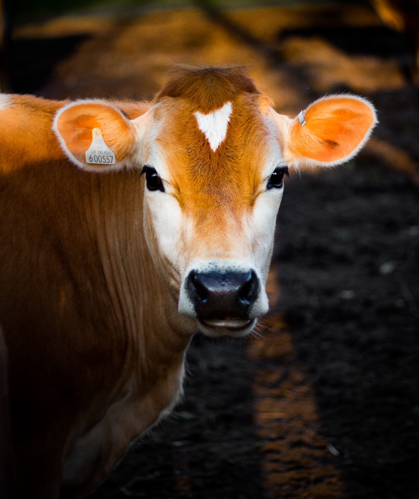

다롱이와 칭구들 - 카프리썬
- 카프리썬
- 서세지
- 소더기
카프리썬
카프리썬이란?
카프리썬은 한국전역에 서식하고 있는 동물계(Animalia) 척삭동물문(Chordata)
포유강(Mammalia)영장목(Primates)사람과(Hominidae)사람속(Homo)
토종종(Homo sapiens) 중 하나이며, 현재는 취직을 위한 활동으로 일본에 서식 중이다.
가끔씩 니얼굴-, 뀨?, 한남재기해-하며 독특한 울음소리들을 내는 것이 특징이다.
유전자 분석을 해보면 유전적 다양성이 멸종 위기종인 고릴라보다 적다.
그리고 2011년 10월 31일 개체수 70억을 돌파하였다.
개체 수가 계속 늘어 200억 이상이 될 거란 전망도 있지만 현재는 증가율이
점점 줄어 현 상황을 유지하거나 많아야 100억 사이를 넘나들 것으로 예상된다.
